🖼️ 画商
The Gallerist · 设计：Vital Lacerda · Eagle-Gryphon Games 出版 · 1–4 人 · 官方英文规则书全文翻译（20 页 · AI 辅助机翻）
本页收录《画商》（The Gallerist, 2015）的原版官方规则书全部 20 页（底本：Eagle-Gryphon Games 官方文件（Skellig Games 服务器镜像），The_Gallerist_rulebook_English%2072dpi.pdf），逐页随图排列，点击任意图片即可放大查看；每页下方默认折叠了该页的 AI 辅助中文机翻对照，需要时可展开。规则内容归 Eagle-Gryphon Games 及版权方所有，收录仅供个人学习查阅。
整理说明：机翻对照按本站术语口径对齐（牌库/手牌/回合/轮/板块/指示物等），PDF 图文混排页的语序可能与原书视觉顺序略有出入；规则细节请一律以页面上方原书页面为准。
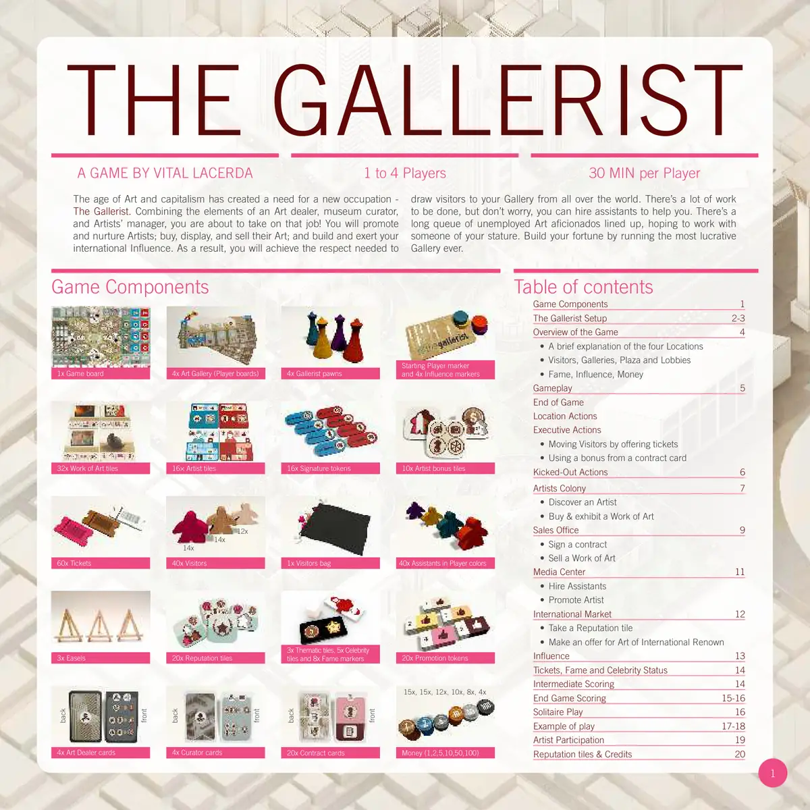
📝 第 1 页 AI 机翻对照（点击展开）
画廊主人
一款由维塔尔·拉塞达设计的游戏
1-4名玩家
每位玩家30分钟
艺术与资本主义的时代创造了一种新职业的需求——
画廊主人。结合艺术品经销商、博物馆策展人和艺术家经理的元素，你即将承担这份工作！你将推广和培养艺术家；购买、展示和销售他们的艺术品；并建立和发挥你的国际影响力。因此，你将获得所需的尊重，吸引来自世界各地的参观者来到你的画廊。有很多工作要做，但别担心，你可以雇佣助手来帮助你。有一长列失业的艺术爱好者排队，希望能与像你这样地位的人共事。通过经营史上最赚钱的画廊来积累你的财富。
游戏组件
1个游戏版图
4个画廊主人棋子
4个艺术画廊（玩家版图）
起始玩家标记
和4个影响力指示物
40名玩家颜色的助手
20个晋升指示物
金钱（1、2、5、10、50、100）
16个签名指示物
10个艺术家奖励板块
16×艺术家板块
20个声誉板块
40名参观者
1个参观者袋
32件艺术品板块
3个画架
60张票
4张艺术品经销商卡
3个主题板块、5个名人板块和8个声望指示物
20张合同卡
4张策展人卡
目录
游戏组件
画廊主人设置
2-3
游戏概览
• 四个地点的简要说明
• 参观者、画廊、广场和大厅
• 声望、影响力、金钱
游戏玩法
游戏结束
地点行动
行政行动
• 通过提供票券移动参观者
• 使用合同卡的奖励
被踢出行动
艺术家聚居地
• 发现一位艺术家
• 购买并展示一件艺术品
销售办公室
• 签订合同
• 销售一件艺术品
媒体中心
• 雇佣助手
• 推广艺术家
国际市场
• 获取一个声誉板块
• 为国际知名艺术品出价
影响力
票券、声望和名人地位
中期计分
游戏结束计分
15-16
单人游戏
游戏示例
17-18
艺术家参与
声誉板块与信用
14x
14x
12x
背面
背面
背面
正面
15x, 15x, 12x, 10x, 8x, 4x
正面
正面
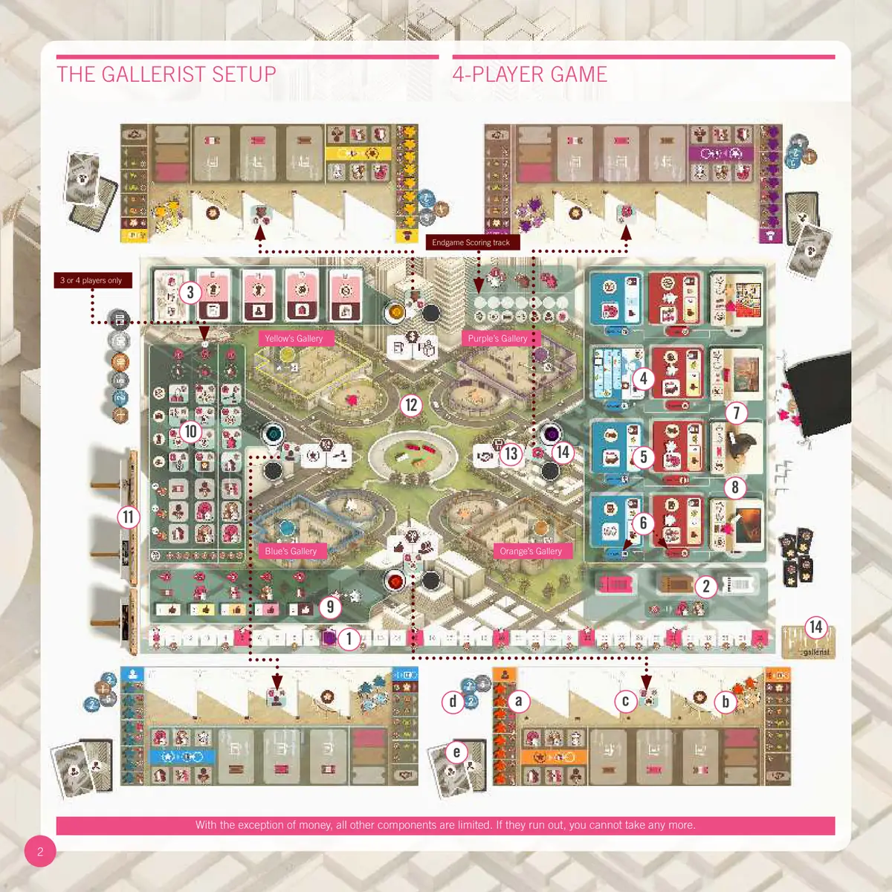
📝 第 2 页 AI 机翻对照（点击展开）
画廊主人设置
4人游戏
b
d
c
e
蓝色玩家的画廊
黄色玩家的画廊
橙色玩家的画廊
紫色玩家的画廊
除了金钱外，所有其他组件都是有限的。如果它们用完，你就不能再获取更多。
a
游戏结束计分轨道
仅限3人或4人游戏
📝 第 3 页 AI 机翻对照（点击展开）
设置
• 将游戏版图放在桌子中央。
• 将玩家版图放在游戏版图周围，靠近相应颜色的画廊。
将访客放入布袋：对于4人游戏，使用所有访客。对于3人游戏，移除每种类型2个并放回盒中。对于2人游戏和单人模式，移除每种类型4个。
设置游戏版图：
- 将每个玩家的影响力标记（圆盘）放在影响力轨道的"10"格上。
2. 在票房中，根据玩家数量放置每种颜色的票数。4人游戏放20张票，3人游戏放15张，2人游戏和单人模式放10张。将剩余的票放回游戏盒中。
销售办公室：
3. 洗混合同卡牌，面朝下放在最左边的格子上。从顶部抽取4张卡牌，面朝上放在四个合同展示格子上。
艺术家聚居地：
- 洗混全部16个艺术家板块，每次一个，放在版图上与艺术家颜色和艺术形式相匹配的格子上。
如果你抽到的艺术家板块所在格子已被占用，将其放回游戏盒中。重复此过程直到所有格子都被填满，然后将剩余的艺术家放回游戏盒中。每种艺术形式必须有一个蓝色和一个红色艺术家。
将第一个抽到的蓝色艺术家板块面朝上放置，并用白色立方体标记其初始声望。初始声望值印在板块的两面。
- 所有其他艺术家游戏开始时面朝下。
洗混艺术家奖励板块，随机在每个艺术家上放置一个。将剩余的艺术家奖励板块放回盒中。从袋中为每个红色艺术家板块放置一个白色访客（收藏家）。
- 将两个艺术家签名指示物放在所有相应艺术家板块旁边。
7. 对于每种艺术形式，洗混相应的艺术品，并将每叠牌面朝上放在相应工作室旁边的格子上。从每叠牌中取出顶部板块，暂时放在一边。
8. 从袋中在每个顶部艺术品上放置与板块上所示票数相等的随机访客数量。
媒体：
9. 将每个推广指示物叠放在相应的编号格子上。
国际市场：
- 随机选择12个声望板块，在国际市场上部4行的每个格子上放置一个面朝上的板块。在2人游戏和单人模式中，只选择8个板块，只覆盖第1列和第3列的上部4行。
- 洗混你之前放在一边的4件艺术品，随机放在版图旁边的每个画架上。4人游戏使用三个画架，3人游戏使用两个画架，2人游戏和单人模式使用一个画架。这些是国际知名的艺术品。
将剩余的画架放回盒中，连同
- 将剩余的艺术品放置在游戏板上。
- 从袋中随机选出4位访客放置在广场上，每位玩家的门厅中各放置1位访客。
- 随机选择起始玩家并给予起始玩家标记。按逆玩家顺序，每位玩家选择一个地点，将他的画廊主放置在那里，并拿取该地点的声誉板块。将剩余板块放回盒中。
• 将其他所有物品放置在游戏板附近。
每位玩家选择一种颜色并按以下方式设置他的画廊：
a. 将8位助理放置在失业队列的格上。
b. 将剩余的2位助理放置在办公室的办公桌上。
c. 将之前拿取的声誉板块放置在其玩家板的第3个艺术品格上。
d. 从银行中获取10金钱。
e. 洗混艺术品经销商卡并随机发给每位玩家一张。对策展人卡也做同样处理。这些卡片需对其他玩家保密。
玩家板设置
a
b
c
票券的颜色不重要 - 只有数字重要
门厅位于玩家的画廊和广场之间
棕色格是初始声望值 - 标记它
奖励板块、访客和签名标记
每种艺术形式有1位蓝色艺术家和1位红色艺术家
的助理)并将这些助理移动到她办公室中的空桌子。
她必须为此总共支付3金钱（第一个助理1个，第二个助理2个）。
黄色
黄色决定从自己的供应中支付2金钱，并使用影响力来支付另外1个。
为了用影响力支付这1金钱，她将她的影响力指示物向后移动两个空间（到带有金钱图标的那个空间）。
在结束她的回合之前，黄色
黄色选择执行一个行政行动：
她提供棕色票券，将一位投资者从广场移动到她的接待室。
被踢出后，紫色的画廊主正在媒体中心外等待。紫色现在可以选择在她的回合开始前执行一个"被踢出行动"：
她没有任何票券或合同，因此无法执行行政行动，但她可以花费影响力来执行两个位置行动中的一个。
为此，她需要将她的影响力标记移回到前一个带有声望图标的那个空间。
这将花费她5点影响力，她认为这太贵了，因此她选择不这样做。
相反，紫色将她的画廊主棋子移动到游戏版图上的她的画廊。
现在轮到紫色自己的回合：
由于她之前的位置被踢出，她现在可以选择移动到任何位置。她将她的画廊主棋子移动到销售办公室，这踢出了黄色
黄色的助理。她想拿一张合同卡，但展示区中的合同没有一张她喜欢的，因此她选择抽取4张新合同并将它们覆盖在展示区中的当前合同上。
然后，她从这些新合同卡中抽取一张，并将其放置在她办公室的第三个空间上（她本可以选择任何空间）。她根据覆盖的空间显示的颜色选择任意颜色的票券；她选择了白色。
在紫色结束她的回合之前，她可以执行一个行政行动：
她可以使用她刚刚获得的票券来移动一位访客，或者通过在她的合同卡上放置一位助理来使用该合同的奖励；她选择两者都不做。
黄色
黄色选择不执行被踢出行动，并将她的助理送回家。
橙色是下一位玩家，他将他的画廊主移动到媒体中心。这踢出了黄色
黄色。
然而，在橙色执行他的位置行动之前，他使用他的行政行动花费一张白色票券，将一位收藏家从他的接待室移动到他的画廊。
然后，作为他的位置行动，他选择提升他在紫色的回合期间通过被踢出行动发现的蓝色摄影师。
艺术家的当前提升等级是1，因此橙色花费2点影响力，并将一个等级2的指示物放置到艺术家上。橙色获得提升指示物空间上方显示的奖励（获得影响力）。这给了他1点影响力（因为他画廊中的收藏家）。
然后，艺术家的声望总共增加了2点：1点用于
提升，并且额外+1，因为橙色的画廊中有1位收藏家。声望指示物被移动到6号格，该格有2个绿色星星图标。这意味着任何现有的艺术品价值都会增加。然而，橙色玩家板旁边的签名指示物仍然只是委托；它尚未被购买，因此它停留在委托格。
蓝色的回合 - 购买艺术品
黄色的回合 - 雇佣助手
紫色的回合 - 获取委托
橙色的踢出行动 - 发现艺术家
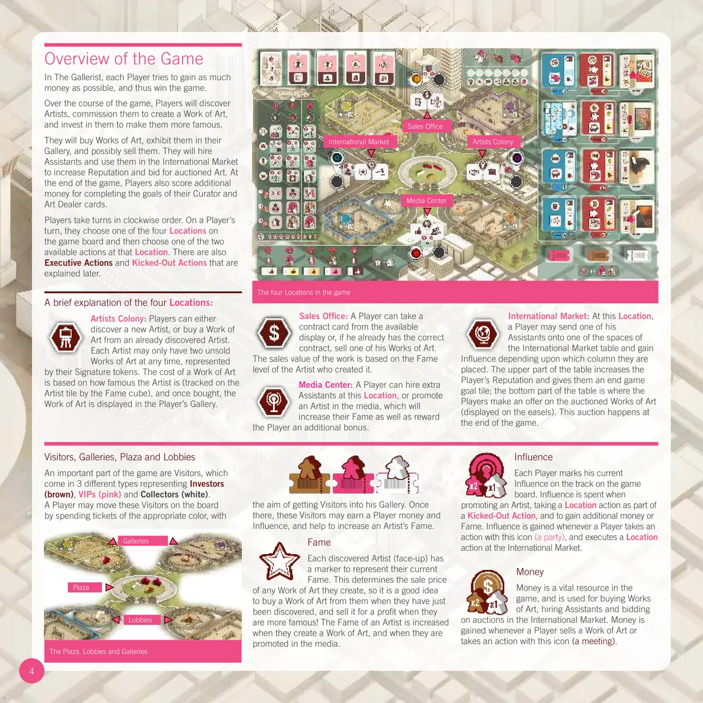
📝 第 4 页 AI 机翻对照（点击展开）
访客、画廊、广场和大厅
游戏的重要组成部分是访客，访客有3种不同类型，分别代表投资者（棕色）、贵宾（粉色）和收藏家（白色）。
玩家可以通过花费相应颜色的票来移动这些访客，目的是将访客送入自己的画廊。一旦进入画廊，这些访客可以为玩家赚取金钱和影响力，并帮助提高艺术家的声望。
声望
每位被发现的艺术家（正面朝上）都有一个标记来代表他们当前的声望。这决定了他们创作的任何艺术品的价格，因此当艺术家刚被发现时购买他们的艺术品，并在他们更出名时出售以获利是个好主意。当艺术家创作艺术品或在媒体上获得宣传时，他们的声望会增加。
影响力
每位玩家在游戏版图上的轨道上标记自己当前的影响力。在宣传艺术家、作为被踢出行动的一部分执行位置行动以及获得额外金钱或声望时需要花费影响力。每当玩家执行带有此图标（派对）的行动，并在国际市场执行位置行动时，可以获得影响力。
金钱
金钱是游戏中的重要资源，用于购买艺术品、雇佣助手以及在国际市场竞拍。每当玩家出售艺术品或执行带有此图标（会议）的行动时，可以获得金钱。
广场、大厅和画廊
广场
画廊
大厅
游戏概览
在《画廊主》(The Gallerist)中，每位玩家试图尽可能多地获得金钱，从而赢得游戏。
在游戏过程中，玩家会发现艺术家，委托他们创作艺术品，并投资于他们以提高他们的知名度。他们会购买艺术品，在画廊中展示它们，并可能出售它们。他们会雇佣助手，并在国际市场中使用他们来提高声誉，并为拍卖的艺术品竞标。在游戏结束时，玩家还会因其策展人和艺术品交易商卡牌的目标完成情况而获得额外分数。
玩家按顺时针顺序轮流行动。在玩家的回合中，他们选择游戏版图上的四个位置之一，然后在该位置选择两个可用行动之一。还有稍后解释的执行行动和被踢出行动。
四个位置的简要说明：
艺术家聚居地：玩家可以发现新艺术家，或从已发现的艺术家那里购买艺术品。
每位艺术家在任何时候最多只能有两件未售出的艺术品，由他们的签名标记表示。艺术品的成本基于艺术家的知名度（通过艺术家板块上的声望骰子追踪），一旦购买，
艺术品被展示在玩家的画廊中。
销售办公室：玩家可以从可用展示中拿取一张合同卡，或者如果他已经有正确的合同，则出售他的一件艺术品。这件作品的销售价值基于创作它的艺术家的声望等级。
媒体中心：玩家可以在该地点雇佣额外的助手，或者在媒体中推广一位艺术家，这将增加他们的声望，并奖励玩家额外的奖励。
国际市场：在该地点，玩家可以将他的一个助手送到国际市场版图的一个格子上，并根据他们放置的列获得影响力。版图的上部增加玩家的声誉，并给他们一个游戏结束目标板块；版图的下部是玩家对拍卖的艺术品（展示在画架上）进行出价的地方。这次拍卖在游戏结束时进行。
游戏中的四个地点
销售办公室
国际市场
艺术家聚居地
媒体中心
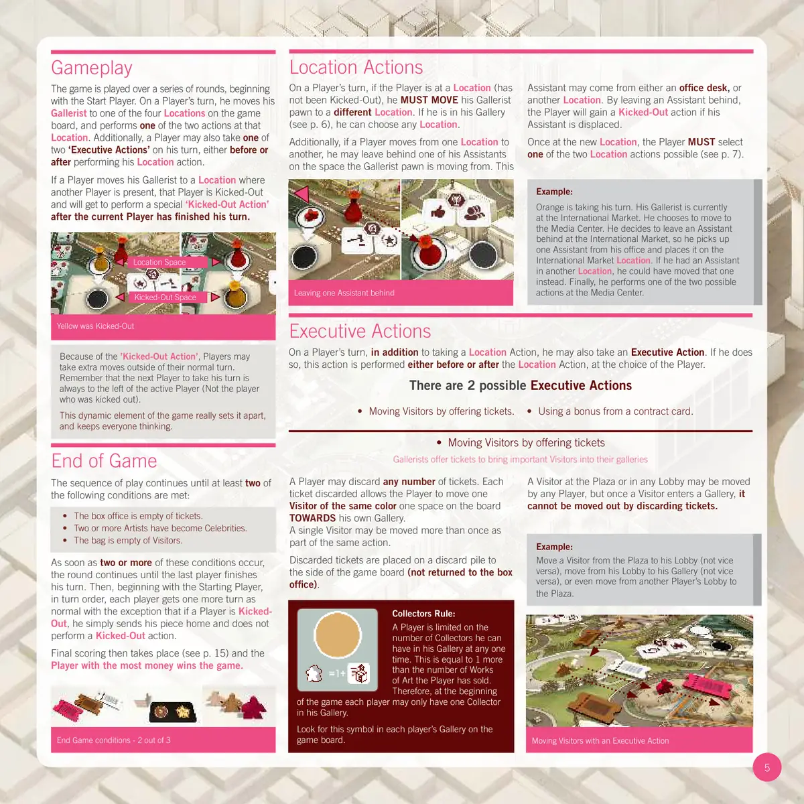
📝 第 5 页 AI 机翻对照（点击展开）
• 通过提供门票移动访客
画廊主人提供门票以将重要访客带入他们的画廊
玩家可以弃置任意数量的门票。每弃置一张门票，允许玩家将一名相同颜色的访客在版图上朝他自己的画廊方向移动一格。
一名访客可以作为同一行动的一部分被移动多次。
弃置的门票被放置在游戏板旁边的弃牌堆上（不返回票房）。
在广场或任何大厅的访客可以被任何玩家移动，但一旦访客进入画廊，就不能通过弃置门票将其移出。
示例：
将访客从广场移动到他自己的大厅（不能反向），从大厅移动到画廊（不能反向），甚至从其他玩家的大厅移动到广场。
收藏家规则：
玩家在其画廊中可拥有的收藏家数量受到限制。这比玩家已售出的艺术品数量多1。
因此，游戏开始时，每位玩家在画廊中只能有一个收藏家。
在游戏板上每位玩家的画廊中寻找此符号。
高管行动
在玩家的回合中，除了执行位置行动外，他还可以执行高管行动。如果这样做，该行动可以在位置行动之前或之后执行，由玩家选择。
有2种可能的高管行动
• 通过提供门票移动访客。
• 使用合约卡上的奖励。
示例：
橙色玩家正在执行他的回合。他的画廊主人当前在国际市场。他选择移动到媒体中心。他决定在国际市场留下一名助手，因此他从办公室拿起一名助手并将其放置在国际市场位置。如果他在其他位置有助手，他也可以移动那个助手。最后，他在媒体中心执行两种可能行动中的一种。
在玩家的回合中，如果玩家在某个位置（未被踢出），他必须将其画廊主人棋子移动到不同的位置。如果他在自己的画廊（见第6页），他可以选择任何位置。
此外，如果玩家从一个位置移动到另一个位置，他可以在画廊主人棋子移动离开的位置留下一名助手。这名助手可以来自办公室桌，也可以来自其他位置。通过留下助手，如果该助手被替换，玩家将获得一个"被踢出"行动。
到达新位置后，玩家必须选择两种可能的位置行动之一（见第7页）。
位置行动
游戏玩法
游戏进行一系列回合，从起始玩家开始。在玩家的回合中，他将自己的画廊主人移动到游戏板上四个位置中的一个。
版图，并在该地点执行两个行动中的一个。此外，玩家在他的回合中也可以在执行地点行动之前或之后，执行两个"行政行动"中的一个。
如果玩家将他的画廊主移动到一个有其他玩家存在的地点，该玩家会被踢出，并在当前玩家完成他的回合后，执行一个特殊的"被踢出行动"。
由于"被踢出行动"，玩家可以在他们的正常回合之外进行额外移动。请记住，下一个进行回合的玩家总是在当前活跃玩家的左侧（不是被踢出的玩家）。
游戏的这个动态元素真正使其与众不同，并让每个人都在思考。
游戏结束
游戏流程继续进行，直到满足以下两个或更多条件：
• 票房中没有票了。
• 两位或更多艺术家已成为名人。
• 袋子中没有访客了。
一旦这些条件中有两个或更多发生，本轮将继续进行，直到最后一位玩家完成他的回合。然后，从起始玩家开始，按顺序，每位玩家再进行一次正常回合，但如果玩家被踢出，他只需将自己的棋子送回家，而不执行被踢出行动。
然后进行最终计分（见第15页），拥有最多金钱的玩家赢得游戏。
黄色被踢出
被踢出空间
地点空间
使用行政行动移动访客
留下一名助手
游戏结束条件 - 3个中的2个
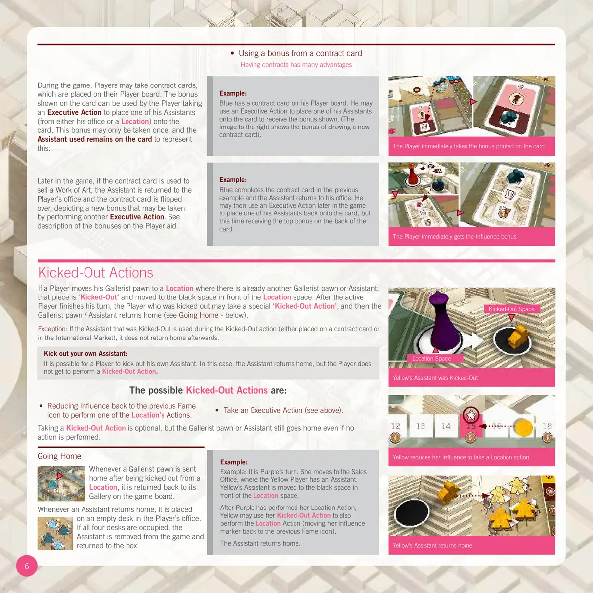
📝 第 6 页 AI 机翻对照（点击展开）
回家
当策展人棋子从某个地点被踢出后送回家时，它会被返回到游戏版图上的其画廊中。
当助理回家时，它会被放置在玩家办公室中的一个空办公桌上。
如果所有四个办公桌都被占用了，该助理会被从游戏中移除并放回盒中。
执行被踢出行动是可选的，但即使没有执行任何行动，策展人棋子或助理仍然会回家。
玩家立即获得卡牌上印制的奖励
玩家立即获得影响力奖励
黄色将其影响力降低以执行地点行动
黄色的助理回家
在游戏过程中，玩家可以获取合同卡，这些卡会被放置在他们的玩家版图上。卡上显示的奖励可以被执行高管行动的玩家用来将其一名助理（来自其办公室或某个地点）放置到该卡上。此奖励只能获得一次，并且使用的助理会留在卡上以代表这一点。
在游戏后期，如果该合同卡被用于出售艺术品，助理会返回到玩家的办公室，合同卡会被翻转过来，显示一个新的奖励，可以通过执行另一个高管行动来获得。请参阅玩家辅助卡上的奖励说明。
示例：
蓝色在其玩家版图上有一张合同卡。他可以使用一个高管行动将其一名助理放置到卡上以获得显示的奖励。（右侧图片显示了摸取一张新合同卡的奖励）。
示例：
蓝色完成了上一个示例中的合同卡，助理返回到他的办公室。他可以在游戏后期使用一个高管行动将其一名助理重新放置到该卡上，但这次获得卡背顶部显示的奖励。
• 使用合同卡的奖励
拥有合同有很多好处
被踢出行动
如果玩家将其策展人棋子移动到一个已经有另一个策展人棋子或助理的地点，该棋子会被"踢出"并移动到该地点空间前的黑色空间中。在当前玩家完成其回合后，被踢出的玩家可以执行一个特殊的"被踢出行动"，然后策展人棋子/助理会回家（参见下面的"回家"）。
例外：如果在被踢出行动期间被踢出的助理被使用（被放置到合同卡上或国际市场上），它之后不会回家。
踢出自己的助理：
玩家可以踢出自己的助理。在这种情况下，助理会回家，但玩家不能执行被踢出行动。
可能被踢出的行动有：
• 将影响力降低回之前的声望
执行一个地点的行动之一。
• 执行一个高管行动（见上文）。
示例：
示例：轮到紫色玩家。她移动到销售办公室，黄色玩家在那里有一个助手。
黄色玩家的助手被移动到地点空间前面的黑色区域。
在紫色玩家执行了她的地点行动后，黄色玩家可以使用她的被踢出行动来也执行地点行动（将她的影响力指示物移回之前的声望图标）。
助手回家。
黄色玩家的助手被踢出
被踢出区域
地点区域
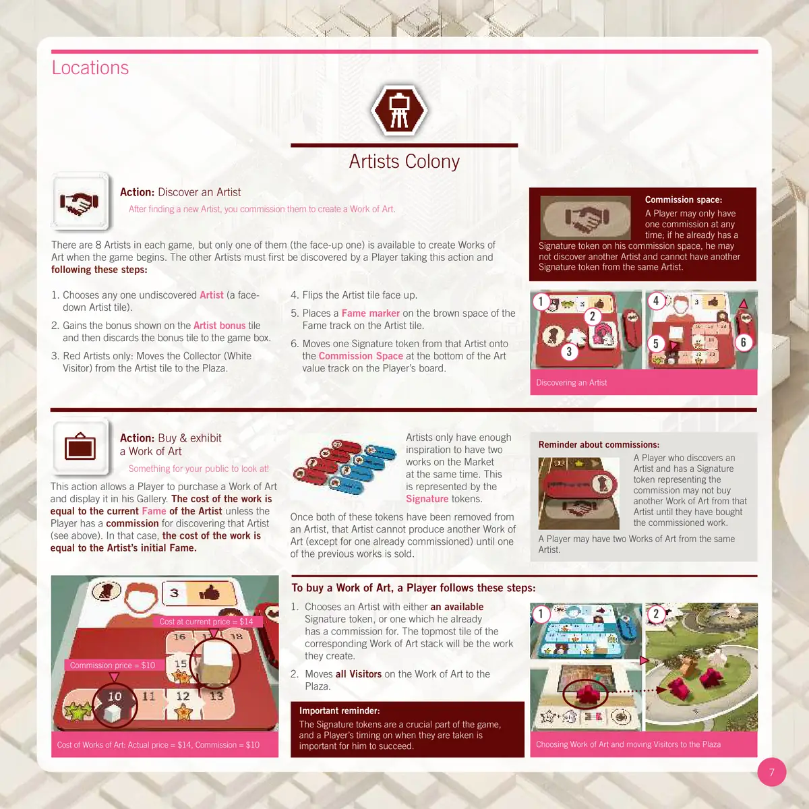
📝 第 7 页 AI 机翻对照（点击展开）
关于委托的提醒：
发现一位艺术家并拥有代表该委托的签名指示物的玩家，在购买委托的作品之前，不得从该艺术家处购买其他艺术品。
一位玩家可以拥有来自同一位艺术家的两件作品。
- 选择任意一位未被发现的艺术家（一张面朝下的艺术家板块）。
2. 获得艺术家奖励板块上显示的奖励，然后将奖励板块弃置到游戏盒中。
- 仅限红色艺术家：将收藏家（白色访客）从艺术家板块移动到广场。
- 将艺术家板块翻至面朝上。
5. 在艺术家板块上的声望轨道的棕色格上放置一个声望指示物。
6. 将该艺术家的一位签名指示物移动到玩家版图上艺术价值轨道底部的委托空间。
委托空间：
玩家在任何时候只能有一个委托；如果他的委托空间上已经有签名指示物，他不能发现另一位艺术家，也不能拥有来自同一位艺术家的另一个签名指示物。
地点
艺术家聚落
行动：购买并展示一件艺术品
给你的公众看些东西！
这个行动允许玩家购买一件艺术品并将其展示在他的画廊中。作品的价格等于该艺术家的当前声望，除非玩家有发现该艺术家的委托（见上文）。在这种情况下，作品的价格等于艺术家的初始声望。
艺术家只有足够的灵感同时在市场上展示两件作品。这由签名指示物表示。
一旦这些指示物从一位艺术家处被全部移除，该艺术家就不能再创作另一件艺术品（除非已被委托的作品），直到之前的一件作品被售出。
1. 选择一位拥有可用签名指示物或玩家已有其委托的艺术家。相应艺术品堆顶端的板块将是他们创作的作品。
2. 将艺术品上的所有访客移动到广场。
重要提醒：
签名指示物是游戏的重要组成部分，玩家何时拿取这些指示物的时间点对他取得成功至关重要。
发现艺术家
行动：发现一位艺术家
在发现一位新艺术家后，你委托他们创作一件艺术品。
每局游戏中有8位艺术家，但只有其中一位（面朝上的那位）在游戏开始时可以创作艺术品。其他艺术家必须先由玩家通过此行动发现，并遵循以下步骤：
艺术品的价格：实际价格 = $14，委托价格 = $10
委托价格 = $10
当前价格 = $14
要购买一件艺术品，玩家遵循以下步骤：
选择艺术品并将访客移动到广场
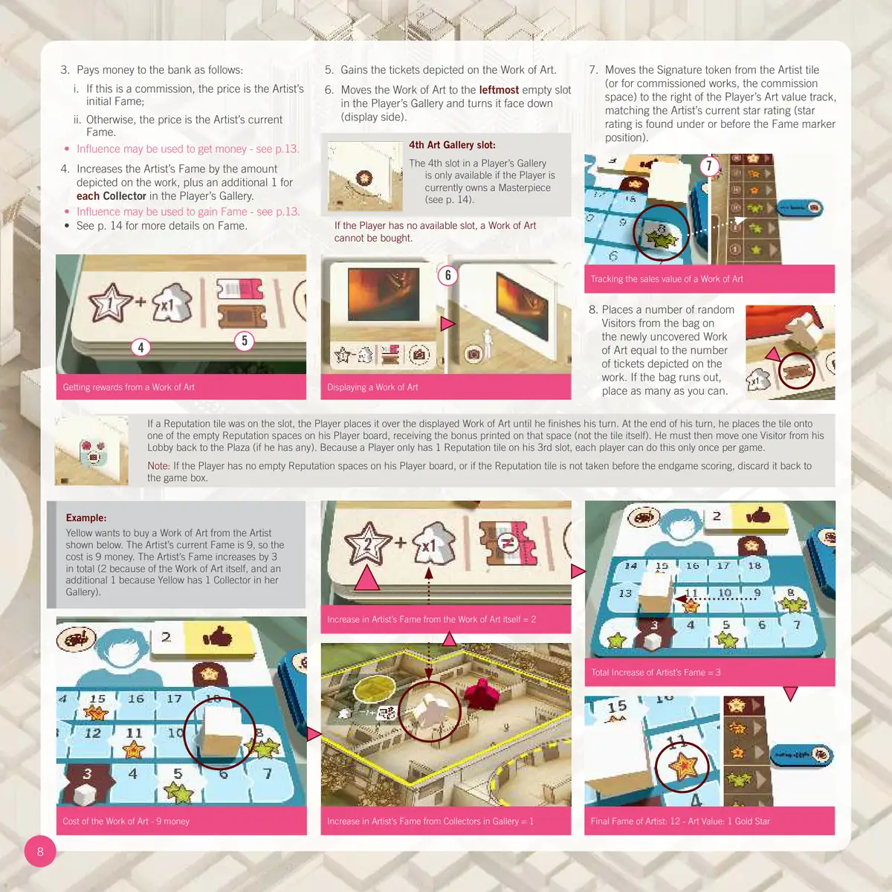
📝 第 8 页 AI 机翻对照（点击展开）
3. 按照以下方式向银行支付金钱：
i. 如果这是一次委托，价格为艺术家的初始声望；
ii. 否则，价格为艺术家的当前声望。
• 可以使用影响力获得金钱 - 参见第13页。
- 将艺术家的声望增加作品上显示的数量，再加上玩家画廊中每位收藏家额外增加1点。
• 可以使用影响力获得声望 - 参见第13页。
• 关于声望的更多细节参见第14页。
- 获得作品上显示的票券。
6. 将艺术品移动到玩家画廊中最左边的空位，并将其面朝下放置（展示面）。
第4个画廊位：
玩家画廊中的第4个位只有在玩家当前拥有杰作时才可用（参见第14页）。
如果玩家没有可用位，则无法购买艺术品。
7. 将签名指示物从艺术家板块上（或委托作品中，从委托空间）移动到玩家艺术价值轨道的右侧，与艺术家的当前星级评分相匹配（星级评分位于声望标记位置下方或前方）。
8. 从袋中取出与作品上显示的票券数量相等的随机访客指示物，放置在新揭示的艺术品上。如果袋中用完，则尽可能多地放置。
如果该位上有声誉板块，玩家将其放置在展示的艺术品上方，直到他结束自己的回合。在他的回合结束时，他将该板块放置在其玩家板上的一个空声誉位上，获得该位上印刷的奖励（而非板块本身的奖励）。然后他必须将其大厅中的一个访客指示物移回广场（如果他有的话）。因为玩家在第3位上只有1个声誉板块，所以每位玩家每局游戏只能这样做一次。
注意：如果玩家的玩家板上没有空声誉位，或者在游戏结束计分前没有拿走声誉板块，则将其弃回游戏盒中。
示例：
黄色玩家想要购买下图所示艺术家的作品。该艺术家的当前声望是9，所以成本是9金钱。艺术家的声望总共增加3点（因为艺术品本身增加2点，再加上黄色玩家画廊中有1位收藏家额外增加1点）。
从艺术品获得奖励
艺术品成本 - 9金钱
展示艺术品
追踪艺术品销售价值
艺术品本身带来的艺术家声望增加 = 2
艺术家最终声望：12 - 艺术价值：1颗金星
来自画廊收藏家的艺术家声望增加 = 1
艺术家声望总增加 = 3
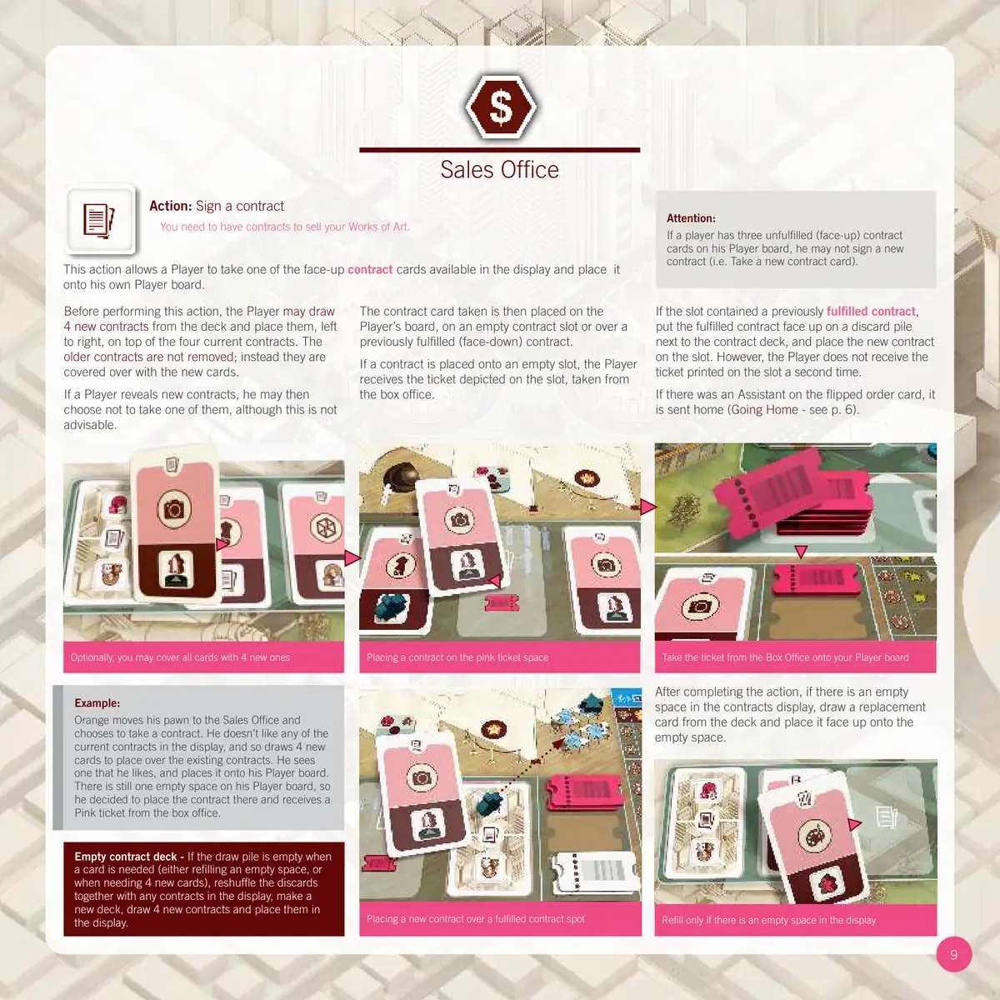
📝 第 9 页 AI 机翻对照（点击展开）
行动：签订合同
你需要有合同才能出售你的艺术品。
这个行动允许玩家从展示区中拿取一张正面朝上的合同卡，并将其放置到他自己的玩家版图上。
在执行此行动前，玩家可以从牌库中摸4张新合同，并从左到右将它们放置在当前的4张合同之上。旧的合同不会被移除；相反，它们会被新卡覆盖。
如果玩家展示了新合同，他可以选择不拿取其中任何一张，尽管这不建议这样做。
然后拿取的合同卡被放置在玩家的版图上，放在一个空的合同槽位或一张先前已完成（正面朝下）的合同之上。
如果合同被放置在空槽位上，玩家会获得槽位上描绘的票券，从票房中取出。
如果槽位包含一张先前已完成的合同，将已完成的合同正面朝上放置在合同牌库旁边的弃牌堆中，并将新合同放在槽位上。但是，玩家不会第二次获得槽位上印刷的票券。
如果翻转的顺序卡上有助手，则助手回家（回家 - 参见第6页）。
可选地，你可以用4张新卡覆盖所有卡
将合同放置在粉色票券空间
仅在展示区有空位时补充
将新合同放置在已完成的合同位置
销售办公室
示例：
橙色将他的棋子移动到销售办公室，并选择签订一份合同。他不喜欢展示区中当前的任何合同，因此抽了4张新卡覆盖在现有合同上。他看到一张他喜欢的，并将其放置在他的玩家版图上。他的玩家版图上仍然有一个空位，所以他决定将合同放在那里，并从票房获得一张粉色票券。
空的合同牌库 - 如果在需要卡牌时（无论是补充空位，还是需要4张新卡）牌库已空，将弃牌堆与展示区中的任何合同一起洗牌，组成一个新牌库，摸4张新合同并将它们放置在展示区中。
从票房将票券取到你的玩家版图上
注意：
如果玩家在他的玩家版图上有三张未完成（正面朝上）的合同卡，他不能签订新合同（即不能拿取新合同卡）。
完成行动后，如果合同展示区有空位，从牌库中抽取一张替换卡，并将其正面朝上放置在空位上。
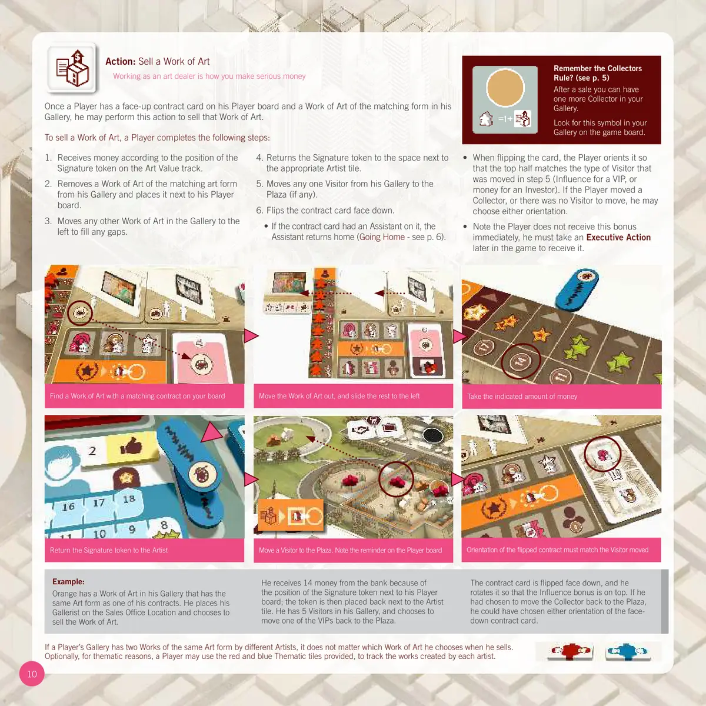
📝 第 10 页 AI 机翻对照（点击展开）
行动：出售艺术品
作为艺术品经销商是你赚取大钱的方式
一旦玩家在他的玩家版面上有一张正面朝上的合同卡，并且在他的画廊中有相应形式的艺术品，他可以执行此行动来出售该艺术品。
要出售一件艺术品，玩家需完成以下步骤：
1. 根据签名指示物在艺术品价值轨道上的位置获得金钱。
2. 从他的画廊中移除一件相应艺术形式的艺术品，并将其放置在他的玩家版面旁边。
3. 将画廊中的任何其他艺术品向左移动以填补任何空隙。
4. 将签名指示物返回到相应艺术家板块旁边的空间。
5. 将他的画廊中的任何一位访客移动到广场（如果有）。
- 将合同卡翻转为背面。
• 如果合同卡上有助手，助手回家（回家规则 - 参见第6页）。
• 翻转卡片时，玩家将其定向，使上半部分与第5步中移动的访客类型相匹配（VIP为影响力，投资者为金钱）。如果玩家移动了收藏家，或者没有访客可移动，他可以选择任一方向。
• 注意玩家不会立即获得此奖励，他必须在游戏稍后执行行政行动才能获得它。
示例：
橙色玩家在他的画廊中有一件艺术品，其艺术形式与他的一张合同相同。他将他的画廊经营者放置在销售办公室位置，并选择出售这件艺术品。
他从银行获得14金钱，因为签名指示物位于他的玩家版面旁边；然后该指示物被放回艺术家板块旁边。他有5位访客在他的画廊中，并选择将其中一位VIP移回广场。
合同卡被翻转为背面，他将其旋转，使影响力奖励朝上。如果他选择将收藏家移回广场，他可以选择背面合同卡的任一方向。
如果玩家的画廊中有两位不同艺术家创作的相同艺术形式的作品，他在出售时选择哪一件作品并不重要。
可选地，出于主题原因，玩家可以使用提供的红色和蓝色主题板块来跟踪每位艺术家创作的作品。
翻转的合同方向必须与移动的访客相匹配
将一位访客移动到广场。注意玩家版面上的提醒
获取指示数量的金钱
将艺术品移出，并将其余的向左滑动
将签名指示物归还给艺术家
在版面上找到与你的合同匹配的艺术品
记住收藏家规则？（参见第5页）
出售后，你可以在你的画廊中多拥有一位收藏家。
在游戏版面的你的画廊中寻找这个符号。
📝 第 11 页 AI 机翻对照（点击展开）
- 将玩家失业队列顶部的最多4名助理移动到其办公室的空办公桌。
2. 为每位助理支付其所在位置旁边显示的费用。
• 可以使用影响力来获取金钱 - 参见第13页。
3. 获得其所在位置旁边显示的任何雇佣奖励（票券、影响力或金钱）。
示例：
黄色想要雇佣更多助理。她目前在办公室里有一名助理，因此最多可以再雇佣三名。她决定雇佣两名新助理，总共支付3金钱费用，并获得一张棕色票券（如失业队列第二个位置旁边所示）。
行动：雇佣助理
你需要的帮助就在身边。
通过执行此行动，玩家可以雇佣尽可能多的助理，只要能塞进其办公室（只有4个办公桌）。雇佣每位助理的费用显示在玩家版图上，并随着失业队列缩短而增加。要雇佣助理，玩家需遵循以下步骤：
1. 支付等于晋升标记新等级的影响力。
2. 将当前的晋升标记（如果有）返还到游戏版图上的相应位置。
3. 将下一等级的晋升标记放置到艺术家上。
如果没有新等级的晋升标记可用，则无法执行此行动。
4. 获得刚刚放置的晋升标记所在位置上方显示的奖励（任意1张票券、影响力、2张不同票券、金钱或访客）。
- 将艺术家的声望增加1，再加上玩家画廊中每位收藏家的额外1点。
• 可以使用影响力来获取声望 - 参见第13页。
行动：推广艺术家
为艺术家安排媒体推广，使他们更加出名。
艺术家板块的右上角显示该艺术家当前的媒体推广等级。通过此行动，玩家可以按顺序遵循以下步骤将此等级提高1级：
示例：
橙色目前正在展示下图所示艺术家的画作。他计划在游戏后期出售这件艺术品，并希望让艺术家更加出名，从而提高其作品的价值。为此，他需要支付影响力。
该艺术家的媒体推广当前为2级，因此橙色支付3影响力，返还2级标记，从版图上取出3级标记并将其放置在艺术家板块上。
他获得版图上显示的票券奖励，艺术家的声望增加2格（1点，再加上因为橙色在画廊中有一位收藏家的额外1点）。
雇佣2名新助理 - 支付3金钱，获得棕色票券
获得奖励，然后提高艺术家的声望
支付影响力，返还之前的标记并推广艺术家
艺术家的当前推广等级
媒体中心
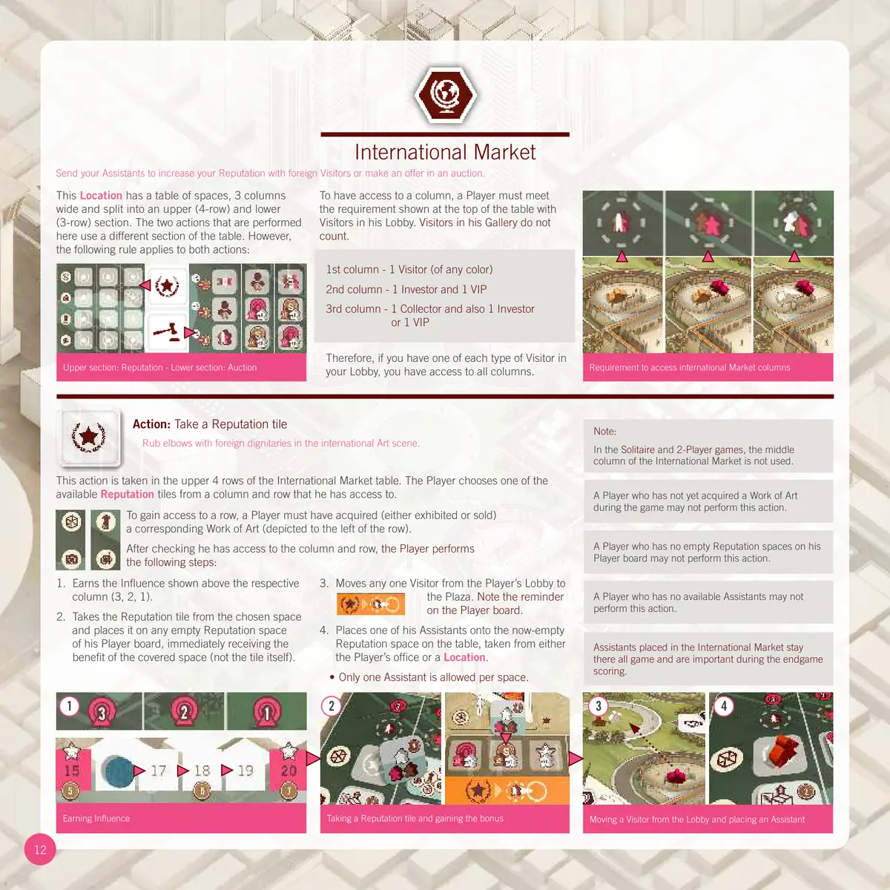
📝 第 12 页 AI 机翻对照（点击展开）
获取影响力
行动：获取一张声望板块
在国际艺术圈与外国要员交往。
此行动在国际市场表格的上部4行进行。玩家从他能够访问的列和行中选择一张可用的声望板块。
1. 获得相应列上方显示的影响力（3、2、1）。
2. 从所选空间拿走声望板块，并将其放置在其玩家版图上任何空的声望空间上，立即获得被覆盖空间的好处（而非板块本身）。
- 将玩家大厅中的任意一位访客移动到广场。注意玩家版图上的提醒。
4. 将其助手之一放置到表格上现在空的声望空间上，助手可从玩家的办公室或地点获取。
• 每个空间只允许放置一位助手。
放置在国际市场的助手在整个游戏中都留在那里，并且在终局计分时很重要。
注意：
在单人模式和2人游戏中，不使用国际市场的中间列。
没有可用助手的玩家无法执行此行动。
玩家玩家版图上没有空的声望空间的玩家无法执行此行动。
尚未在游戏中获得艺术品的玩家无法执行此行动。
此地点有一个表格，宽3列，分为上部（4行）和下部（3行）两个部分。在这里执行的两个行动使用表格的不同部分。但是，以下规则适用于两个行动：
要访问一列，玩家必须在其大厅中拥有满足表格顶部要求的访客。其画廊中的访客不计入。
第一列 - 1位访客（任何颜色）
第二列 - 1位投资者和1位贵宾
第三列 - 1位收藏家，以及1位投资者或1位贵宾
因此，如果您的大厅中拥有每种类型的访客各一位，您就可以访问所有列。
国际市场
获取声望板块并获得奖励
将访客从大厅移动并放置助手
派遣您的助手以增加您与外国访客的声望或在拍卖中出价。
上部：声望 - 下部：拍卖
访问国际市场列的要求
要访问一行，玩家必须已获得（展出或出售）相应的艺术品（显示在该行左侧）。
在确认自己可以访问该列和行后，玩家执行以下步骤：
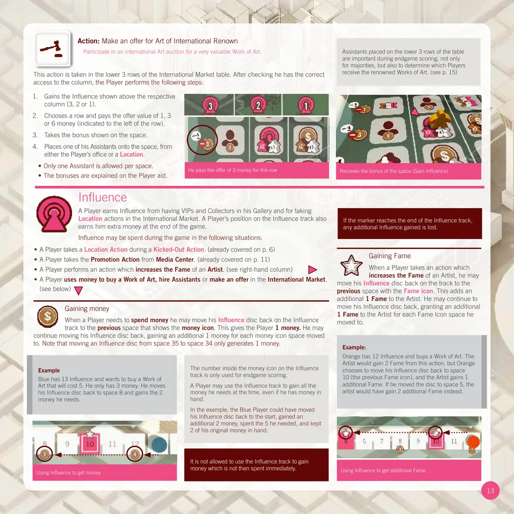
📝 第 13 页 AI 机翻对照（点击展开）
行动：为国际声誉艺术品出价
参与一场国际艺术品拍卖，竞拍一件非常有价值的艺术品。
此行动在国际市场表格的底部3行进行。玩家确认自己有进入相应列的权限后，执行以下步骤：
1. 获得显示在相应列上方的声望（3、2或1）。
- 选择一行并支付该行左侧标示的出价价值1、3或6金钱。
- 获得该空间上显示的奖励。
4. 从玩家的办公室或一个地点放置他的一个助手到该空间。
• 每个空间只允许放置一个助手。
• 奖励内容在玩家辅助卡上说明。
获得空间的奖励（获得声望）
使用声望获得金钱
放置在表格底部3行的助手在游戏结束计分时很重要，不仅用于计算多数，还用于确定哪些玩家获得著名的艺术品。（见第15页）
示例
蓝色玩家有13点声望，想要购买一件将花费5金钱的艺术品。但他只有3金钱。他将他的声望指示物移回8号空间，获得了他需要的2金钱。
获得金钱
当玩家需要花费金钱时，他可以将他的声望指示物在声望轨道上向后移动到显示金钱图标的上一个空间。这给予玩家1金钱。他可以继续将他的声望指示物向后移动，每移动到一个显示金钱图标的空间就额外获得1金钱。注意，从35号空间移动到34号空间只会产生1金钱。
• 玩家在驱逐行动期间执行地点行动。（已在第6页涵盖）
• 玩家从媒体中心执行晋升行动。（已在第11页涵盖）
• 玩家执行增加艺术家声望的行动。（见右栏）
• 玩家使用金钱购买艺术品、雇佣助手或在国际市场出价。（见下文）
声望轨道上金钱图标内的数字仅用于游戏结束计分。
玩家可以使用声望轨道获得他当时需要的所有金钱，即使他手中有金钱。
在示例中，蓝色玩家可以将他的声望指示物移回起点，额外获得2金钱，花费他需要的5，并保留他原有的2金钱在手中。
不允许使用声望轨道获得金钱而不立即花费。
如果指示物到达声望轨道的末端，任何额外获得的声望将丢失。
使用声望获得额外声望
获得声望
当玩家执行增加艺术家声望的行动时，他可以将他的声望指示物在轨道上向后移动到带有声望图标的上一个空间。这为该艺术家额外增加1点声望。他可以继续
将其影响力指示物向后移动，为艺术家提供额外1点声望，每移动到一个声望图标格就获得1点。
示例：
橙色拥有12点影响力并购买一件艺术品。艺术家将从这一行动中获得2点声望，但橙色选择将其影响力指示物移回10号格（前一个声望图标），艺术家获得1点额外声望。如果他移动指示物到5号格，艺术家将获得2点额外声望。
他为这一行支付3金钱报价
玩家通过在其画廊中拥有VIP和收藏家，以及在国际市场中执行位置行动来获得影响力。玩家在影响力轨道上的位置也会在游戏结束时为他赚取额外金钱。
影响力可以在以下情况下在游戏中使用：
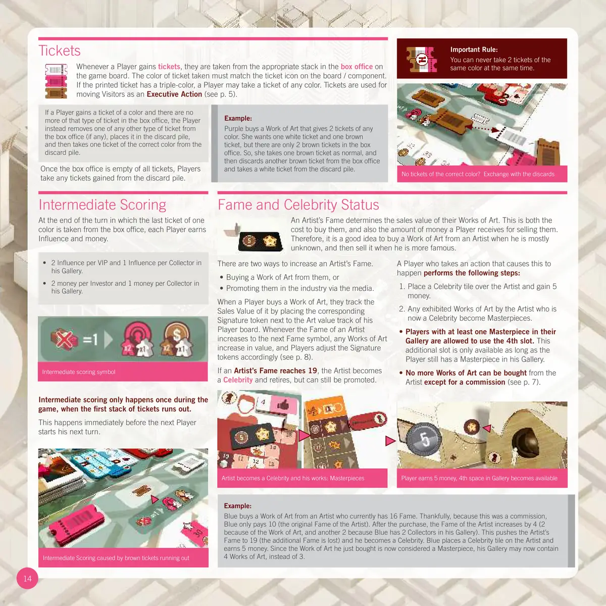
📝 第 14 页 AI 机翻对照（点击展开）
中级评分符号
有两种方式可以提高艺术家的声望。
• 从他们那里购买艺术品，或
• 通过媒体在行业内推广他们。
当玩家购买艺术品时，他们通过将相应的签名指示物放置在其玩家版图的艺术价值轨道旁边来追踪其销售价值。每当艺术家的声望增加到下一个声望符号时，所有艺术品的价值都会增加，玩家相应地调整签名指示物（见第8页）。
如果艺术家的声望达到19，该艺术家成为名人并退休，但仍可以被推广。
导致这种情况发生的玩家执行以下步骤：
- 将名人板块放置在艺术家上方并获得5金钱。
2. 现已成为名人的艺术家的所有展出艺术品都成为杰作。
• 在画廊中至少拥有一件杰作的玩家可以使用第4个槽位。只要玩家在画廊中仍有一件杰作，这个额外槽位就可用。
• 除了委托（见第7页）外，不能再从该艺术家处购买艺术品。
中级评分
在从票房取走某颜色最后一张票的回合结束时，每位玩家获得影响力和金钱。
• 每位VIP和每位收藏家在画廊中各获得2影响力和1影响力。
• 每位投资者和每位收藏家在画廊中各获得2金钱和1金钱。
中级评分只在游戏进行一次，当第一叠票用完时发生。这发生在下一位玩家开始其下一回合之前。
没有正确颜色的票？与弃牌堆交换
艺术家成为名人，其作品：杰作
如果玩家获得一张某颜色的票，但票房中该类型的票已用完，玩家则从票房中移除一张其他类型的票（如果有），将其放入弃牌堆，然后从弃牌堆中取出一张正确颜色的票。
当票房中的票全部用完后，玩家获得从弃牌堆中得到的任何票。
票
每当玩家获得票时，他们从游戏版图上的相应牌堆中取票。所取票的颜色必须与版图/组件上的票图标相匹配。如果印刷的票是三色票，玩家可以取任意颜色的票。票用于作为行政行动移动访客（见第5页）。
示例：
紫色购买了一件给予2张任意颜色票的艺术品。她想要一张白色票和一张棕色票，但票房中只有2张棕色票。因此，她正常取走一张棕色票，然后从票房中丢弃另一张棕色票，并从弃牌堆中取一张白色票。
重要规则：
你不能同时拿取两张相同颜色的车票。
声望与名人地位
艺术家的声望决定了其艺术品的销售价值。这既是购买它们所需的成本，也是玩家出售它们时获得的金额。
因此，当艺术家还不太出名时购买其艺术品，然后在艺术家更出名时出售，是个好主意。
玩家获得5金钱，画廊的第4个空间变得可用
由于棕色车票用完而触发中间计分
示例：
蓝从一位当前声望为16的艺术家那里购买了一件艺术品。幸运的是，由于这是委托作品，蓝只需支付10（艺术家的原始声望）。购买后，艺术家的声望增加了4（因为这件艺术品+2，因为蓝的画廊中有2位收藏家+2）。这使得艺术家的声望达到19（额外的声望会丢失），他成为名人。蓝在艺术家上放置一个名人指示物并获得5金钱。由于他刚购买的艺术品现在被视为杰作，他的画廊现在可以容纳4件艺术品，而不是3件。
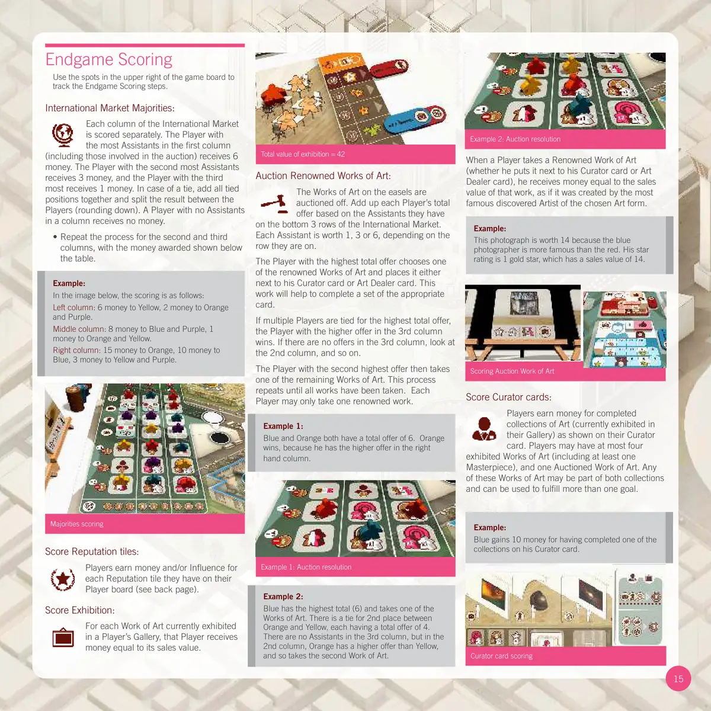
📝 第 15 页 AI 机翻对照（点击展开）
终局计分
使用游戏板右上角的标记来追踪终局计分的步骤。
国际市场多数：
国际市场的每一列分别计分。在第一列拥有最多助手（包括参与拍卖的那些）的玩家获得6金钱。拥有第二多助手的玩家获得3金钱，拥有第三多助手的玩家获得1金钱。如果出现平局，将所有平局的位置相加，然后在平局的玩家之间分配结果（向下取整）。在一列中没有助手的玩家不获得金钱。
• 对第二列和第三列重复此过程，奖金金额显示在表格下方。
示例：
在下图中，计分如下：
左列：黄色获得6金钱，橙色和紫色各获得2金钱。
中列：蓝色和紫色各获得8金钱，橙色和黄色各获得1金钱。
右列：橙色获得15金钱，蓝色获得10金钱，黄色和紫色各获得3金钱。
计算声望板块分数：
玩家根据其玩家板块（见背面）上的每个声望板块获得金钱和/或影响力。
计算展览分数：
对于玩家画廊中当前展出的每件艺术品，该玩家获得等于其销售价值的金钱。
拍卖著名艺术品：
画架上的著名艺术品将被拍卖。根据玩家在国际市场底部3行上的助手数量，计算每位玩家的总出价。每个助手根据其所在行分别价值1、3或6。
总出价最高的玩家选择一件著名艺术品，并将其放置在其策展人卡或艺术品经销商卡旁边。这件作品将有助于完成相应卡牌的套牌。
如果有多位玩家总出价并列最高，则在第三列出价更高的玩家获胜。如果第三列没有出价，则看第二列，以此类推。
然后，总出价第二高的玩家选择一件剩余的艺术品。此过程重复进行，直到所有艺术品都被选走。每位玩家只能选择一件著名艺术品。
示例1：
蓝色和橙色总出价都是6。橙色获胜，因为他在右列的出价更高。
示例2：
蓝色总出价最高（6），选择了一件艺术品。橙色和黄色并列第二，总出价都是4。第三列没有助手，但在第二列，橙色的出价比黄色高，因此选择了第二件艺术品。
当玩家选择了一件著名艺术品（无论将其放在策展人卡还是艺术品经销商卡旁边），他获得等于该艺术品销售价值的金钱，就好像是由所选艺术形式中最著名的已发现艺术家创作的一样。
这张照片价值14，因为蓝色摄影师比红色摄影师更有名。他的星级评定是1颗金星，其销售价值为14。
评分策展人卡牌：
玩家因完成的艺术品收藏（当前在其画廊中展出）而获得金钱，如他们的策展人卡所示。玩家最多可以拥有四件展出的艺术品（包括至少一件杰作）和一件拍卖的艺术品。这些艺术品中的任何一件都可以同时属于多个收藏，并且可以用于满足多个目标。
示例：
蓝色玩家因其策展人卡上完成的一个收藏而获得10金钱。
多数派评分
展览总价值 = 42
示例1：拍卖结算
示例2：拍卖结算
评分拍卖的艺术品
策展人卡评分
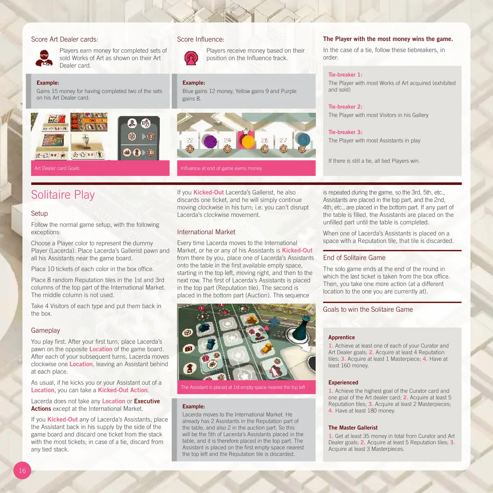
📝 第 16 页 AI 机翻对照（点击展开）
单人游戏
设置
遵循正常的游戏设置，但有以下例外：
选择一种玩家颜色来代表虚拟玩家（Lacerda）。将Lacerda的画廊主棋子和他的所有助手放在游戏板附近。
在售票处放置每种颜色的10张票。
在国际市场上部区域的第1列和第3列放置8张随机声望板块。中间列不使用。
取4张每种类型的访客，并将它们放回盒中。
游戏流程
你先行动。在你的第一个回合后，将Lacerda的棋子放在游戏板的相反位置。
在你随后的每个回合后，Lacerda顺时针移动一个位置，在每个地方留下一个助手。
照常，如果他把你或你的助手踢出某个位置，你可以执行被踢出行动。
Lacerda除了在国际市场外，不执行任何位置或主管行动。
如果你踢出了Lacerda的任何助手，将该助手放回游戏板旁边的他的供应区，并从票数最多的牌堆中弃掉一张票；如果有平局，可以从任意平局的牌堆中弃掉。
如果你踢出了Lacerda的画廊主，他也弃掉一张票，并且他将继续在他的回合中顺时针移动；即你不能打断Lacerda的顺时针移动。
国际市场
每当Lacerda移动到国际市场，或者你把他或他的任何助手从那里踢出时，将Lacerda的一个助手放在桌面上第一个可用的空位上，从左上角开始，向右移动，然后到下一行。Lacerda的第一个助手放在上部（声望板块）。第二个助手放在下部（拍卖）。这个顺序在游戏过程中重复，因此第3、5等个助手放在上部，第2、4等个助手放在下部。如果桌面的任何部分已满，助手们会被放在未填满的部分，直到桌面被填满。
当一个Lacerda的助手被放在有声望板块的位置上时，该板块被弃掉。
单人游戏结束
单人游戏在从售票处取走最后一张票的回合结束时结束。然后，你再执行一个行动（在不同于你当前位置的位置）。
单人游戏获胜目标
学徒
1. 完成至少一个你的策展人和艺术商目标；2. 获得至少4张声望板块；3. 获得至少1件杰作；4. 拥有至少160金钱。
老手
1. 完成策展人卡片的最高目标和艺术商卡片的一个目标；2. 获得至少5张声望板块；3. 获得至少2件杰作；4. 拥有至少180金钱。
大师画廊主
- 从策展人和艺术品商人的目标中获得总计至少35金钱；2. 获得至少5声望板块；3. 获得至少3杰作。
计分艺术品商人卡牌：
玩家根据其艺术品商人卡牌上所示已售出的艺术品组合获得金钱。
示例：
因其艺术品商人卡牌上的两个组合已完成而获得15金钱。
计分影响力：
玩家根据他们在影响力轨道上的位置获得金钱。
示例：
蓝色获得12金钱，黄色获得9，紫色获得8。
金钱最多的玩家赢得游戏。若平局，按以下顺序进行平局判定：
平局判定1：
获得最多艺术品（展出和售出）的玩家
平局判定2：
其画廊中访客最多的玩家
平局判定3：
在场助手最多的玩家
如果仍然平局，所有平局玩家均获胜。
艺术品商人卡牌目标
游戏结束时的影响力可获得金钱
助手被放置在距离左上角最近的第一个空格
示例：
Lacerda移动到国际市场。他在桌面的声望部分已有2个助手，在拍卖部分也有2个。因此这将是Lacerda在桌面上放置的第5个助手，因此被放置在上部。助手被放置在距离左上角最近的第一个空格，声望板块被弃置。
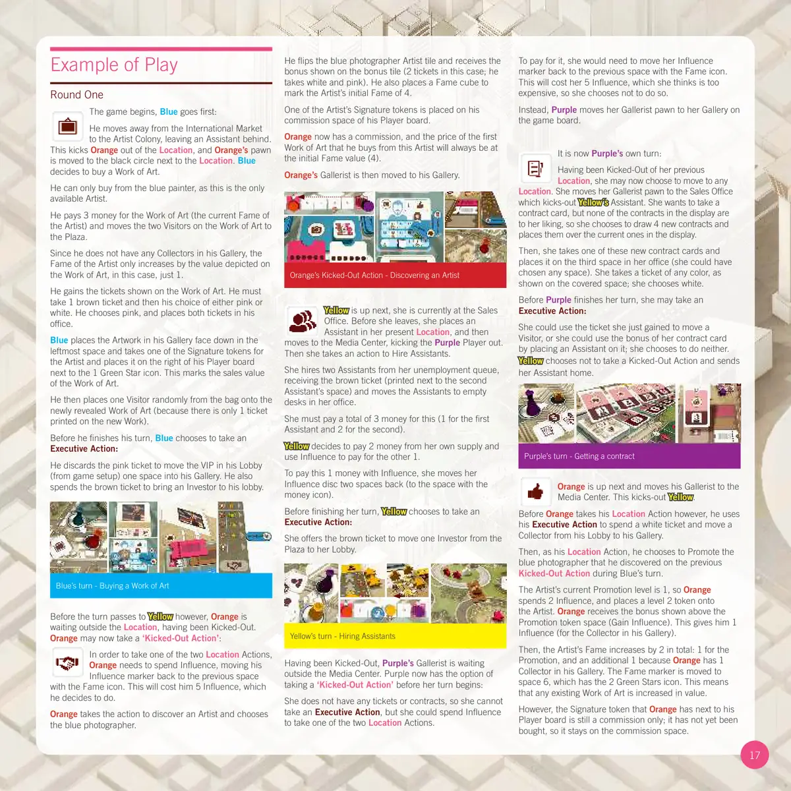
📝 第 17 页 AI 机翻对照（点击展开）
游戏示例
第一轮
游戏开始，蓝方先行：
他从国际市场移动到艺术家聚居地，留下一名助手。
这把橙方从该位置踢出，橙方的棋子被移动到该位置旁边的黑色圆圈。蓝方决定购买一件艺术品。
他只能从蓝色画家那里购买，因为这是唯一可用的艺术家。
他为这件艺术品支付3金钱（艺术家的当前声望值），并将艺术品上的两名访客移动到广场。
由于他的画廊中没有收藏家，艺术家的声望值仅增加艺术品上显示的数值，在此情况下仅为1。
他获得艺术品上显示的票券。他必须拿取1张棕色票券，然后可以选择粉色或白色中的一张。他选择了粉色，并将两张票券都放入他的办公室。
蓝方将艺术品面朝下放入他的画廊的最左侧空格，并取走一张艺术家的签名指示物，将其放置在他的玩家版图右侧，靠近1个绿色星星图标旁。这标记了艺术品的销售价值。
然后他从袋中随机放置一名访客到新揭示的艺术品上（因为新艺术品上只印有1张票券）。
在他结束回合前，蓝方选择执行一个高管行动：
他弃掉粉色票券，将他大厅中的VIP（来自游戏设置）移动一格进入他的画廊。他还花费棕色票券，将一名投资者带到他的大厅。
在轮到黄方之前
然而，橙方正在位置外等待，已被踢出。
橙方现在可以执行"被踢出行动"：
为了执行两个位置行动中的一个，橙方需要花费影响力，将其影响力指示物移回带有声望图标的上一个空格。这将花费他5点影响力，他决定这样做。
橙方执行发现艺术家的行动，并选择蓝色摄影师。
他翻转蓝色摄影师艺术家板块，并获得奖励板块上显示的奖励（本例中为2张票券；他拿取白色和粉色）。他还放置一个声望立方体来标记艺术家的初始声望值为4。
艺术家的一个签名指示物被放置在他玩家版图的委托空格上。
橙方现在有了一个委托，他从这位艺术家购买的第一件艺术品的价格将始终是初始声望值（4）。
然后橙方的画廊主被移动到他的画廊。
黄方
接下来轮到黄方，她当前在销售办公室。在她离开前，她在当前位置放置了一名助手，然后移动到媒体中心，将紫方玩家踢出。
然后她执行雇佣助手的行动。
她从她的失业队列中雇佣了两名助手，获得棕色票券（印在第二个
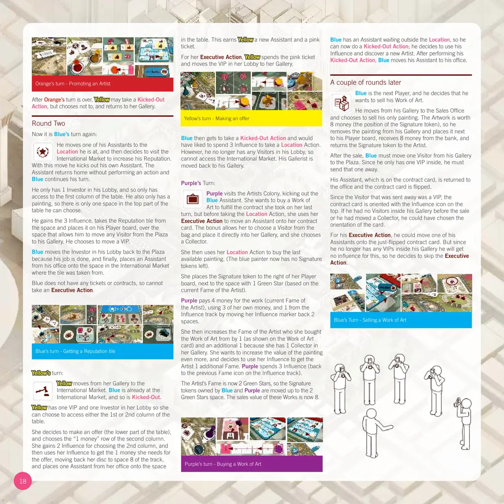
📝 第 18 页 AI 机翻对照（点击展开）
橙色的回合结束后，轮到黄色
黄色可以执行一个被踢出的行动，但她选择不执行，并返回到她的画廊。
第二轮
现在又轮到蓝色：
他将他的一个助手移动到他所在的位置，然后决定访问国际市场以提高他的声誉。
通过这个移动，他踢出了自己的助手。助手返回家中，没有执行任何行动，蓝色继续他的回合。
他在大堂里只有1个投资者，因此只能访问表格的第一列。他也只有一幅画，所以在表格的上部只有一个空间可以选择。
他获得3点影响力，从该空间拿取声誉板块，并将其放置在他的玩家板上，覆盖在允许他将广场上的访客移动到他的画廊的那个空间上。他选择移动一个VIP。
他将大堂里的投资者移回广场，因为他的工作已经完成，最后，从他办公室将一个助手放置到国际市场板块上被取走板块的那个空间。
蓝色没有任何票券或合同，因此无法执行高管行动。
黄色的
黄色回合：
黄色从她的画廊移动到国际市场。蓝色已经在国际市场，因此被踢出。
黄色在她的画廊里有一个VIP和一个投资者，因此她可以选择访问表格的第一列或第二列。
她决定进行报价（表格的下部），并选择第二列的"1金钱"行。
她因选择第二列而获得2点影响力，然后使用她的影响力获得报价所需的1金钱，将她的圆盘移回轨道的第8格，并从她的办公室将一个助手放置到表格上的那个空间。这为黄色
黄色赢得了一个新助手和一张粉色票券。
对于她的高管行动，黄色
黄色花费粉色票券，将她大堂里的VIP移动到她的画廊。
然后蓝色可以执行一个被踢出的行动，并希望花费3点影响力来执行一个位置行动。然而，他大堂里已经没有任何访客，因此无法访问国际市场。他的画廊主被移回他的画廊。
紫色的回合：
紫色访问艺术家聚居地，踢出了蓝色助手。她想购买一件艺术品来完成她上一回合获得的合同，但在执行位置行动之前，她使用她的高管行动将一个助手放置到她的合同卡上。奖励允许她从袋子里选择一个访客，并将其直接放入她的画廊，她选择了一个收藏家。
然后她使用她的位置行动购买最后一件可用的画作。（现在蓝色画家已经没有签名指示物了）。
她将签名指示物放置到她的玩家板
橙色玩家的回合 - 推广一位艺术家
蓝色玩家的回合 - 出售一件艺术品
蓝色是下一位玩家，他决定要出售他的艺术品。
他从自己的画廊移动到销售办公室，并选择出售他唯一的一幅画。这件艺术品价值8金钱（签名指示物的位置），所以他从画廊中移除这幅画，并将其放置在他的玩家版图旁边，从银行获得8金钱，并将签名指示物归还给艺术家。
出售后，蓝色必须将一位访客从他的画廊移动到广场。由于他只有一位VIP在里面，他必须送走这位访客。
他在合同卡上的助手被送回办公室，合同卡被翻转。
由于被送走的访客是VIP，合同卡将以影响力图标朝上放置。如果他在出售前画廊内没有访客，或者他移动了一位收藏家，他可以选择卡的朝向。
对于他的执行行动，他可以将他的其中一位助手移动到刚刚翻转的合同卡上。但由于他的画廊内不再有任何VIP，他将因此得不到任何影响力，所以他决定跳过执行行动。
黄色玩家的回合 - 提出报价
紫色玩家的回合 - 购买一件艺术品
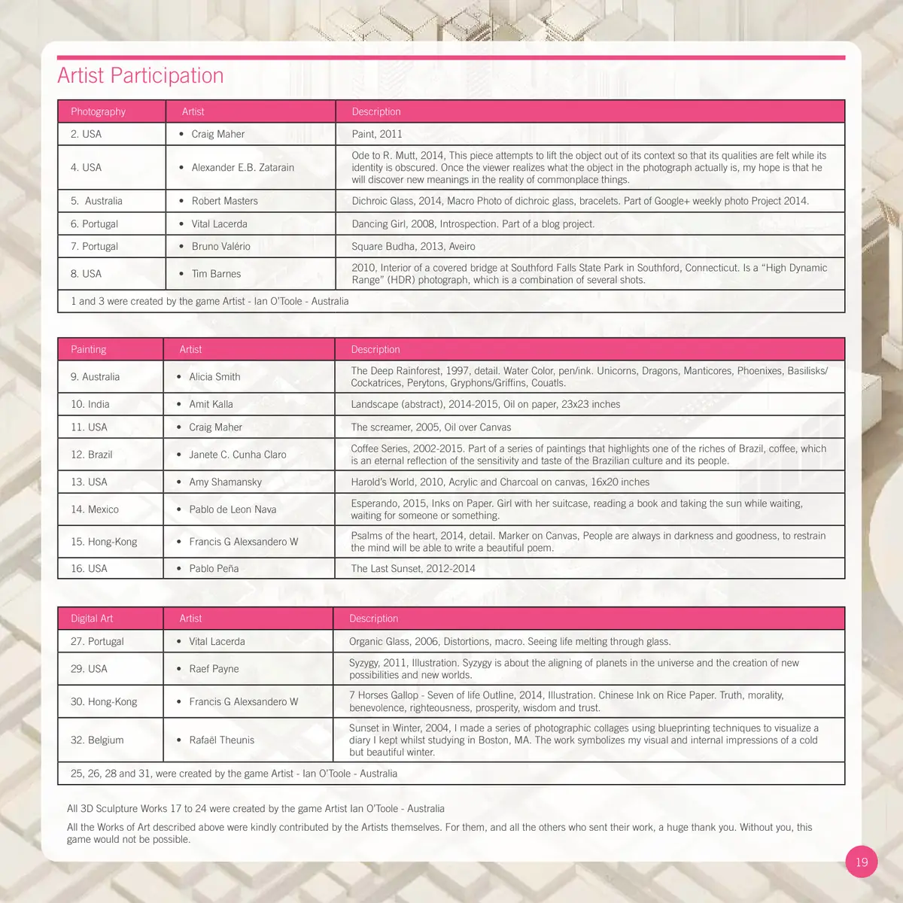
📝 第 19 页 AI 机翻对照（点击展开）
艺术家参与
所有3D雕塑作品17至24均由游戏艺术家Ian O'Toole - 澳大利亚创作
上述所有艺术作品均由艺术家本人慷慨提供。对他们以及所有寄来作品的艺术家们，致以衷心的感谢。没有你们，这款游戏将无法实现。
摄影
艺术家
描述
2. 美国
• Craig Maher
绘画，2011
4. 美国
• Alexander E.B. Zatarain
向R. Mutt致敬，2014，这件作品试图将物体从其背景中提取出来，使其品质得以感受，同时其身份被模糊化。一旦观者意识到照片中的物体实际上是什么，我希望他能在平凡事物的现实中发现新的意义。
5. 澳大利亚
• Robert Masters
二向色玻璃，2014，二向色玻璃手镯的微距照片。谷歌+每周摄影项目2014的一部分。
6. 葡萄牙
• Vital Lacerda
舞女，2008，内省。博客项目的一部分。
7. 葡萄牙
• Bruno Valério
方形佛陀，2013，阿威罗
8. 美国
• Tim Barnes
2010，康涅狄格州南福德州立公园南福德瀑布处一座覆盖式桥梁的内部。这是一张"高动态范围"（HDR）照片，由多张照片组合而成。
1和3由游戏艺术家 - Ian O'Toole - 澳大利亚创作
绘画
艺术家
描述
9. 澳大利亚
• Alicia Smith
深邃的热带雨林，1997，细节。水彩画，钢笔/墨水。独角兽、龙、曼提科雷、凤凰、蛇怪/鸡蛇、佩里顿、狮鹫/格里芬、夸尔图尔。
10. 印度
• Amit Kalla
风景（抽象），2014-2015，纸上油画，23x23英寸
11. 美国
• Craig Maher
尖叫者，2005，画布上油画
12. 巴西
• Janete C. Cunha Claro
咖啡系列，2002-2015。一系列绘画作品的一部分，突出了巴西的财富之一——咖啡，它是巴西文化及其人民敏感性和品味永恒的反映。
13. 美国
• Amy Shamansky
哈罗德的世界，2010，丙烯和炭笔在画布上，16x20英寸
14. 墨西哥
• Pablo de Leon Nava
等待，2015，纸上墨水。女孩带着她的手提箱，一边读书一边晒太阳，等待着，等待某人或某物。
15. 香港
• Francis G Alexsandero W
心灵的诗篇，2014，细节。马克笔在画布上，人们总是处于黑暗与善良之间，约束心灵才能写出美丽的诗篇。
16. 美国
• Pablo Peña
最后的日落，2012-2014
数字艺术
艺术家
描述
27. 葡萄牙
• Vital Lacerda
有机玻璃，2006，扭曲，微距。透过玻璃看到生命融化。
29. 美国
• Raef Payne
合相，2011，插图。合相是关于宇宙中行星的排列以及新可能性和新世界的创造。
30. 香港
• Francis G Alexsandero W
32. 比利时
• 拉斐尔·泰尼斯（Rafaël Theunis）
《冬日夕阳》，2004年，我创作了一系列摄影拼贴画，使用蓝图技术来可视化我在马萨诸塞州波士顿学习期间保持的日记。这件作品象征了我对一个寒冷但美丽的冬天的视觉和内心印象。
25、26、28和31，由游戏艺术家 - 伊恩·奥图尔（Ian O'Toole）- 澳大利亚创作
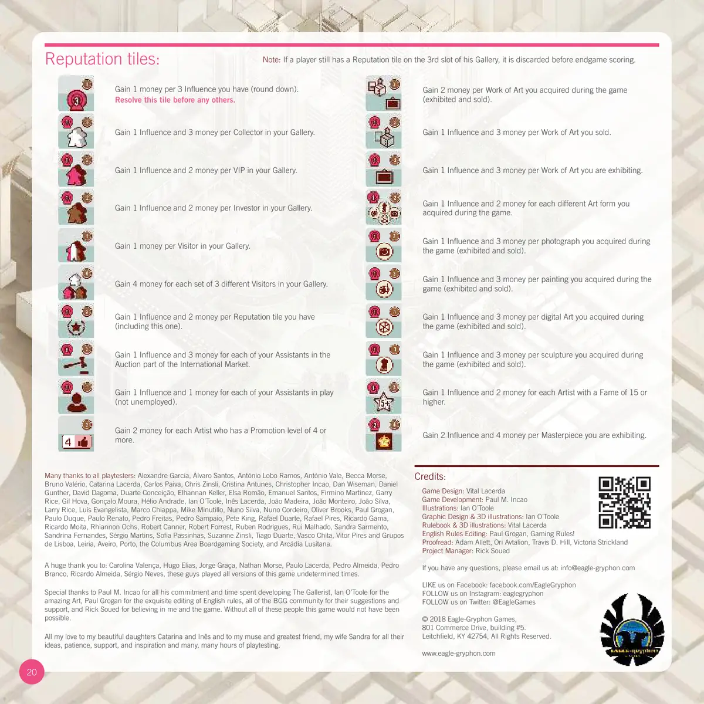
📝 第 20 页 AI 机翻对照（点击展开）
声望板块：
感谢所有测试玩家：Alexandre Garcia, Álvaro Santos, António Lobo Ramos, António Vale, Becca Morse,
Bruno Valério, Catarina Lacerda, Carlos Paiva, Chris Zinsli, Cristina Antunes, Christopher Incao, Dan Wiseman, Daniel
Gunther, David Dagoma, Duarte Conceição, Elhannan Keller, Elsa Romão, Emanuel Santos, Firmino Martinez, Garry
Rice, Gil Hova, Gonçalo Moura, Hélio Andrade, Ian O´Toole, Inês Lacerda, João Madeira, João Monteiro, João Silva,
Larry Rice, Luís Evangelista, Marco Chiappa, Mike Minutillo, Nuno Silva, Nuno Cordeiro, Oliver Brooks, Paul Grogan,
Paulo Duque, Paulo Renato, Pedro Freitas, Pedro Sampaio, Pete King, Rafael Duarte, Rafael Pires, Ricardo Gama,
Ricardo Moita, Rhiannon Ochs, Robert Canner, Robert Forrest, Ruben Rodrigues, Rui Malhado, Sandra Sarmento,
Sandrina Fernandes, Sérgio Martins, Sofia Passinhas, Suzanne Zinsli, Tiago Duarte, Vasco Chita, Vitor Pires 以及 Grupos
de Lisboa, Leiria, Aveiro, Porto, the Columbus Area Boardgaming Society, 和 Arcádia Lusitana.
特别感谢：Carolina Valença, Hugo Elias, Jorge Graça, Nathan Morse, Paulo Lacerda, Pedro Almeida, Pedro
Branco, Ricardo Almeida, Sérgio Neves，这些人无数次地尝试了游戏的所有版本。
特别感谢 Paul M. Incao 为他投入的所有时间和精力开发《The Gallerist》(画廊主)，Ian O'Toole 提供的精美艺术，Paul Grogan 对英文规则的精细编辑，BGG 社区的所有成员提出的建议和支持，以及 Rick Soued 对我和游戏的信任。没有这些人，这款游戏不可能实现。
将我全部的爱给我的美丽女儿 Catarina 和 Inês，以及我的缪灵和最好的朋友——我的妻子 Sandra，感谢她们所有的想法、耐心、支持和灵感，以及无数小时的测试游戏。
制作人员：
游戏设计：Vital Lacerda
游戏开发：Paul M. Incao
插画：Ian O´Toole
平面设计与 3D 插画：Ian O´Toole
规则书与 3D 插画：Vital Lacerda
英文规则编辑：Paul Grogan, Gaming Rules!
校对：Adam Allett, Ori Avtalion, Travis D. Hill, Victoria Strickland
项目经理：Rick Soued
如有任何问题，请通过以下邮箱联系我们：info@eagle-gryphon.com
在 Facebook 上关注我们：facebook.com/EagleGryphon
在 Instagram 上关注我们：eaglegryphon
在 Twitter 上关注我们：@EagleGames
© 2018 Eagle-Gryphon Games,
801 Commerce Drive, building #5.
Leitchfield, KY 42754, All Rights Reserved.
www.eagle-gryphon.com
每拥有 3 点影响力获得 1 金钱（向下取整）。
在其他任何板块之前解决此板块。
每在游戏期间获得（展出和售出）的艺术品获得 2 金钱。
每在你的画廊中的收藏家获得 1 点影响力和 3 金钱。
每售出一件艺术品获得 1 点影响力和 3 金钱。
根据你画廊中的每位VIP，获得1点影响力和2金钱。
根据你正在展出的每件艺术品，获得1点影响力和3金钱。
根据你画廊中的每位投资者，获得1点影响力和2金钱。
根据你在游戏期间获得的每种不同艺术形式，获得1点影响力和2金钱。
根据你画廊中的每位访客，获得1金钱。
根据你在游戏期间获得的每张照片（展出和售出），获得1点影响力和3金钱。
根据你画廊中每套3位不同的访客，获得4金钱。
根据你在游戏期间获得的每幅画（展出和售出），获得1点影响力和3金钱。
根据你拥有的每块声望板块（包括这块），获得1点影响力和2金钱。
根据你在游戏期间获得的每件数字艺术品（展出和售出），获得1点影响力和3金钱。
根据你在国际市场拍卖环节中的每位助手，获得1点影响力和3金钱。
根据你在游戏期间获得的每件雕塑（展出和售出），获得1点影响力和3金钱。
根据你在游戏中正在使用的每位助手（非失业状态），获得1点影响力和1金钱。
根据每位声望值为15或更高的艺术家，获得1点影响力和2金钱。
根据每位推广等级为4或更高的艺术家，获得2金钱。
根据你正在展出的每件杰作，获得2点影响力和4金钱。
注意：如果玩家在其画廊的第三个槽位上仍然有一块声望板块，则在游戏结束计分前将其弃置。